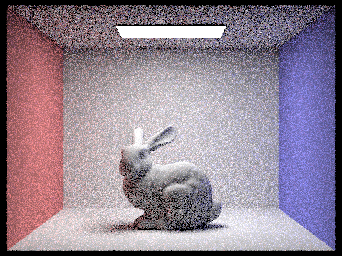

Overview
In this project, I implemented the core routines of a physically-based renderer using a pathtracing algorithm. It reinforced many of the ideas covered in lectures including ray-scene intersection, acceleration structures, and physically-based lighting and materials. Once completed, it is able to generate realistic looking images in a sizeable amount of time.
Part 1: Ray Generation and Scene Intersection (20 Points)
Walk through the ray generation and primitive intersection parts of the rendering pipeline.
We start off with filling out Camera::generate_ray(...), which takes normalized image coordinates and outputs a ray in the world space.
After converting the coordinates of the bottom-left corner to \( (-tan(hFov/2), -tan(hvFov/2), -1)\) and the top-right corner of the image to \( (tan(hFov/2), tan(hvFov/2), -1)\) from the image space into the camera space.
we are able to use linear interpolation to get the x-value and y-value of the vector in camera space.
Multiplying the vector by the provided camera-to-world rotation matrix and
normalizing it, we are able to define a ray using that vector as the direction vector and the camera position as the origin. The ending and the beginning of the ray
also need to be set to the two clipping planes, where everything inside the gap is visible by the camera.

Next, we have to fill out PathTracer::raytrace_pixel(...), which updates a pixel with the integral of radiance over the pixel using Monte Carlo estimation.
We have to define a 3D vector that holds the accumulated scene radiance along the randomly
generated ray by the camera. The total number of rays is based on the number of samples wanted. An average of the accumulated radiance by the number of rays gives us the integral of radiance over the pixel.
Explain the triangle intersection algorithm you implemented in your own words.
This is where all of the magic happens. It is responsible for the rendering of objects that took into account the visibility, presence of shadows, lighting, and other factors.
For my triangle intersection algorithm, I used the optimized Möller-Trumbore algorithm.
A ray is parameterized by \(r(t) = O + tD\) for \(0 <= t <= \infty\).
Given a triangle with vertices \(P_1, P_2, P_3\), we can define a point within the triangle using barycentric coordinates by \(P = b_1 P_1 + b_2 P_2 + (1 - b_1 - b_2) P_3 \). To calculate the intersection,
We set \(r(t) = P\) and solve for \(t, b_1, b_2\).
We check whether or not \(t\) is within the bounds given by the ray. We also check whether the barycentric coordinates are within the interval \([0, 1]\).
If valid, We calculate the surface normal at the intersection using the barycentric coordinates and the three vertex normals using interpolation.
After normalizing the surface normal, we update the intersection structure accordingly.
Finally, We need to fill out the functions for ray-sphere intersection. For this specific problem, there are three scenarios that could happen:
zero intersection, one intersection, or two intersections.
A ray is parameterized by \(r(t) = O + tD\) for \(0 <= t <= \infty\).
Given a sphere with center \(C\), we can define a point on the sphere \(P : (P - C)^2 - R^2 = 0 \). Similarly, to calculate the intersection,
We set \(r(t) = P\) and solve for \(t_1, t_2\).
After getting two roots, We check whether or not it is larger than zero, and whether or not it is between the bounds given by the ray. The intersection that is chosen is the smallest one, since the larger one represents the intersection from inside the sphere. we calculate the surface normal using a given function that returns the point \(t * |d|\) along the ray. After normalizing the surface normal, we update the intersection structure accordingly.
Show images with normal shading for a few small .dae files.
Part 2: Bounding Volume Hierarchy (20 Points)
Walk through your BVH construction algorithm. Explain the heuristic you chose for picking the splitting point.
The BVH construction algorithm is a pre-processing step that recursively builds the BVH from the base level upwards to help with rendering speeds. For my BVH construction alogirthm, we start by computing the bounding box for all the primitives. A new BVHNode is initialized with the bounding box. Whenever the number of primitives in the left or right split is less than or equal to the assigned maximum leaf size, we stop the recursion, assign pointers, and return the leaf node. If it is not a leaf node, it is an internal node at some level in the tree. In that case, we find the average of the all the centroids of the primitives. After, we pick the largest axis to be one we split. Next, we allocate space on the heap for two vectors, containing primitives on the left side or the right side of the average centroid. We need to have an extra check to make sure there is at least one primitive for both sides, taking one and placing it into the empty vector if necessary.
Show images with normal shading for a few large .dae files that you can only render with BVH acceleration.
Compare rendering times on a few scenes with moderately complex geometries with and without BVH acceleration. Present your results in a one-paragraph analysis.
| Scene | Number of Primitives | Average Intersection Tests per Ray | Render Speed (million rays per second) |
|---|---|---|---|
| wall-e | 240326 | 80537 / 211 | 546.936s / 2.218s |
| blob | 196608 | 66997 / 227 | 433.099s / 2.284s |
| cblucy | 133796 | 45124 / 17 | 268.208s / 0.136 |
| dragon | 105120 | 35958 / 133 | 231.828s / 1.056s |
Despite my rather simple splitting heuristic, we can observe that rendering times are significantly cut in half for moderately complex geometries, while it may not have a noticeable effect for simple geometries. By only checking intersections with bounding boxes of a group of primitives, any bounding box not intersected means that there is no need to check intersection with the primitives inside of those boxes, therefore reducing the number of intersection of intersection tests per ray. This shows that the BVH preprocessing provides tremendous benefit compared to its negligible construction costs.
Part 3: Direct Illumination (20 Points)
Walk through both implementations of the direct lighting function.
We start by implementing part of the BSDF, which represents materials that can both reflect and transmit light. They represent the ratio of incoming light scattered from incident direction to outgoing direction. For DiffuseBSDF::f, we need to implement a way to represent a diffuse material (Lambertian surfaces) that reflects incoming light in all directions on the hemisphere equally. Since reflected luminance is equal in all directions, all we need to do is to return \( \frac{\rho}{\pi} \) where \(\rho\) is the albedo of the material, ranging from 0 (total absorption) to 1 (total reflection).
Show some images rendered with both implementations of the direct lighting function.
| Uniform Hemisphere Sampling | Light Sampling |
|---|---|
|
|
|
|
|
|
Focus on one particular scene with at least one area light and compare the noise levels in soft shadows when rendering with 1, 4, 16, and 64 light rays (the -l flag) and with 1 sample per pixel (the -s flag) using light sampling, not uniform hemisphere sampling.
|
|
|
|
|
|
We can observe the effects of increasing number of light rays while keeping a constant number of samples using the pictures shown above. As the number of light rays increase, there is less variance in the rendered image, thereby giving off less noise. Shadows now appear more realistic and soft as the colors blend more seamlessly together.
Compare the results between uniform hemisphere sampling and lighting sampling in a one-paragraph analysis.
Lighting sampling converges much faster than uniform hemisphere sampling since it focuses only on rays cast from the hit point that actually intersects a light source directly instead of randomly casting rays to every point in the hemisphere, leading to more noise in the rendered image. It also uses much less resources while providing a better quality image when using the same parameters due to having to do less sampling.
Part 4: Global Illumination (20 Points)
Walk through your implementation of the indirect lighting function.
Light does not simply bounce once after hitting a surface. As long as it still has energy, it could still bounce many more times until no energy remains. In this implementation, we produce global illumination through considering light that directly intersects the camera and the light that indirectly intersects the camera after a number of bounces. For the "zero-bounce" case, we return the provided function isect.bdsf->get_emission(). For the "at-least-one-bounce" case, we initiailize the illumination with value returned by the one_bounce_radiance function we implemented. We sample the surface BSDF at the intersection point using isect.bdsf->sample_f(), which also gives us back the probabilistically sampled unit vector giving the incoming radiance direction and a pdf evaluated at the incoming radiance direction. After converting the incoming radiance direction into world coordinates, we initialized a new ray in the incoming radiance direction that originates at the intersection point offset by EFS_F multiplied by the incoming ray direction. We should make sure the ray's depth decreases by 1 each time the function is recursively called. If the ray's depth is greater than one, and it intersects the BVH, we gain the radiance the ray by recursively calling at_least_one_bounce_radiance on the new ray. The radiance is then weighted by the BDSF and the cosine of the incoming radiance direction (before conversion to world space coordinates) and divided by the pdf and the Russian roulette probability. This is to ensure that avoid infinite recursion while keeping an unbiased estimate.
Show some images rendered with global (direct and indirect) illumination. Use 1024 samples per pixel.
|
|
|
Pick one scene and compare rendered views first with only direct illumination, then only indirect illumination. Use 1024 samples per pixel. (You will have to edit PathTracer::at_least_one_bounce_radiance(...) in your code to generate these views.)
|
|
|
The only parts being lit are the undersides of the spheres and the ceiling in the rendered image that only uses the indirect illumination.
For CBbunny.dae, compare rendered views with max_ray_depth set to 0, 1, 2, 3, and 100 (the -m flag). Use 1024 samples per pixel.
|
|
|
|
|
|
|
|
The noticeable difference comes from comparing the first case where there is zero bounce to the second case where there is one bounce. The ceiling and the underside of the bunny is lit in the second case whereas they aren't in the first case as it could only be lit by bounced light rays as the light source is directly on top and cannot directly reach those areas.
Pick one scene and compare rendered views with various sample-per-pixel rates, including at least 1, 2, 4, 8, 16, 64, and 1024. Use 4 light rays.
|
|
|
|

|
|
|
|
|
|
|
As the number of samples per pixel increases, there is less noise and the image looks great. However, a noticeably high number of pixels is needed for
convergence, which can be computationally expensive and take significant amounts of time to render on even modern machines.
Below are renders with global illumination using 64 samples per pixel, 32 samples per area light, and a max ray depth of 5.
Part 5: Adaptive Sampling (20 Points)
Explain adaptive sampling. Walk through your implementation of the adaptive sampling.
Given \(n\) samples through a pixel, we can get their mean \(μ\) and standard deviation \(\sigma\) by the provided formulas. \[\mu=\frac{s_1}{n}\] \[\sigma^2=\frac{1}{n-1}\cdot\left(s_2-\frac{s_1^2}{n}\right)\] \[ I = 1.96 \cdot \frac{\sigma}{\sqrt{n}} \] Whenever \(I \leq maxTolerance \cdot \mu\), where \(maxTolerance = 0.05\) by default, we assume the pixel has converged and stop tracing rays for that pixel. In the loop, we use each sample's illuminance \(x_k\) to accumulate these variables \[s_1=\sum_{k=1}^n x_k\] \[s_2=\sum_{k=1}^n (x_k)^2\] We create a loop that iterates as many times as the number of samples to evaluate. If the batch size is equal to the assigned number of samples per batch, we reinitialize the batch size to zero and check using the provided process. If not, we sample the grid and initialize a ray that is generated from the camera's perspective, passing through the camera / sensor plane with the x offset by the x coordinate of the sample divided by the width of the sample buffer and the y offset by the y coordinate of the sample divided by the height of the sample buffer. The depth of the ray should be set to the max ray depth. We call on the function that estimates the global illumination using the new ray. It is then added to the total radiance. Once the loop breaks, we divide it by the number of samples done and update the pixel with the total radiance and set sample count buffer to the number of samples done.